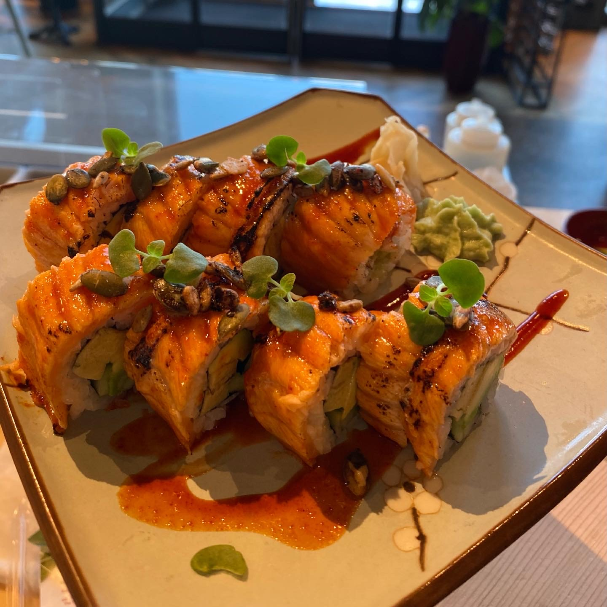
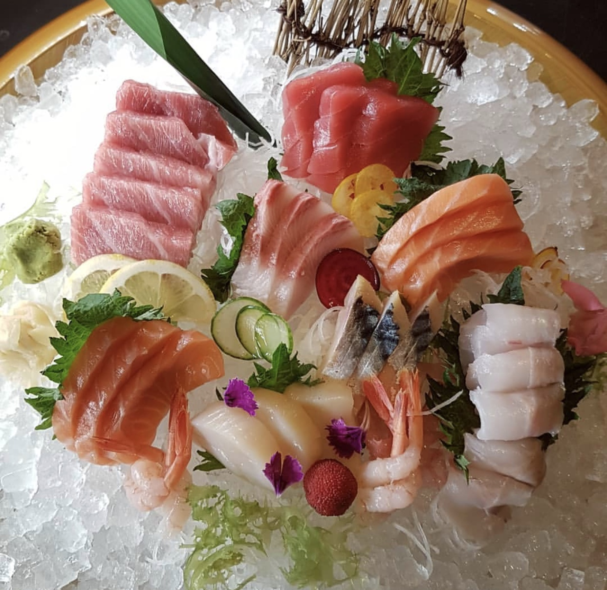

Chirashi, or chirashizushi is a classic style of sushi.
It's a bed of sushi rice and ingredients “scattered” over the top in a decorative manner.
Tamago, shiitake, kanpyo, and oboro are common ingredients. Raw fish is also a popular topping.
Chirashi is often packed into a shallow rectangular or circular lacquerware box.

"FLYING SALMON ROLL" Maki means “roll” in Japanese, so if Maki appears in the name of the dish, it is rolled. In the U.S.,
when someone says Maki, it refers to the sushi roll, however, in Japan, the correct term to use is Makizushi.
Maki Sushi is considered a beginner sushi since it is one of the most popular types of
sushi in the world and is not adventurous as other sushi types.

Considering the word “sashimi” comes from the Japanese words “sa” (meaning “knife”) and “shi” (meaning “fillet”),
it should come as no surprise that the Japanese specialty features thinly sliced raw fish. Typically,
the dish is served with only soy sauce so the meat can be the star of this wonderfully umami-flavored meal.
But you might also find it accompanied by wasabi or pickled ginger.

The addition of rice is what turns sashimi into nigiri. The word “nigiri” actually comes from the Japanese term for “clasp
in the hand,” and these little bundles of rice are formed by hand. The dish is sometimes eaten with soy sauce and wasabi,
and you can find it topped with cooked ingredients, but the main components are the vinegar-flavored rice and raw fish.